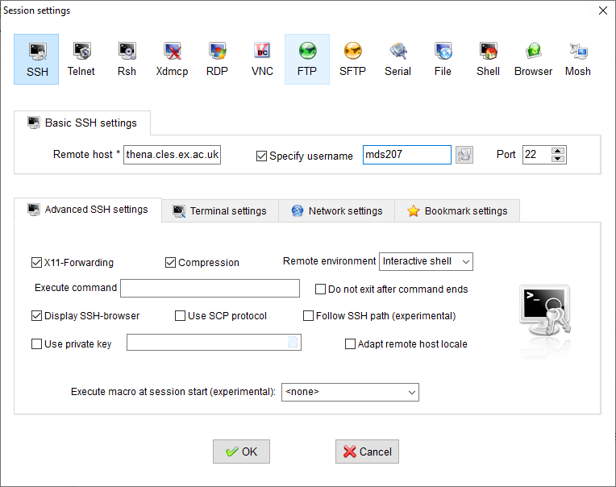

Connection
SSH keys
Access is not available with a password, only with SSH keys. In short. We create a pair of keys, one public, one private. The public key is saved on the login node and the private key stays on the user’s host. Connection only works if private and public keys match.
Linux / mac
Generating a pair of keys
The following command may require a package install. It’s called openssh-client on debian/ubuntu. Also esmeralda is the name of the key. You can name it whatever you want, but you have to stay consistent with the config file (few sections below).
ssh-keygen -t rsa -f esmeraldaThis asks for a passphrase twice and creates 2 files: esmeralda and esmeralda.pub. The first one is the private key, the second one is the public key.
What to do with the keys
Send only the public key to one of the administrators: olivier.thibault@univ-tours.fr. Keep the public key somewhere, for example in ~/.ssh/.
The private key must be in the ~/.ssh/ folder (which must be created if it does not exist). Note that every host destined to connect to the cluster will require this private key (along with the config file, see below).
Connecting with SSH
If you want to run graphical applications from outside the university’s network, see Connecting with NX. If you’re not a console enthusiast and wish to have a graphical desktop, also see Connecting with NX.
From inside the university’s network
Add these lines to the ~/.ssh/config file, replacing LOGIN by the login name the administrator gave you:
Host esmeralda
Hostname 10.195.17.215
User LOGIN
IdentityFile ~/.ssh/esmeraldaExplanations. What is given on the Host line is an alias, and the options that follow this line will only be used if the alias is recognized by ssh. So this will work:
ssh esmeraldaBut the following will not work, because the IdentityFile option will not be used:
ssh LOGIN@10.195.17.215The alias esmeralda can be changed to anything you want. The IdentityFile line tells ssh to connect using the given private key.
From outside the university’s network
Request VPN access to olivier.thibault@univ-tours.fr, then follow the instructions given here.
If you are anti-gnome or anti-network-manager, you can also
- install openvpn,
- download the configuration files at the address above,
- extract the archive and move inside (with cd),
give yourself root privileges and run:
openvpn vpn-univ-TCP-443.ovpn
Once connected, refer to the previous section.
Windows
Download MobaXterm and install it.
Generating a pair of keys
Run MobaXterm, click on Start local terminal and run:
ssh-keygen -t rsa -f esmeraldaThis asks for a passphrase twice and creates 2 files: esmeralda and esmeralda.pub. The first one is the private key, the second one is the public key. These two files must be in the C:\Users\XXX\Documents\MobaXterm\home\ (XXX being your user name) folder.
What to do with the keys
Send only the public key to one of the administrators: olivier.thibault@univ-tours.fr. Keep the keys where they are.
Note that every host destined to connect to the cluster will require this private key.
Connecting with SSH
If you want to run graphical applications from outside the university’s network, see Connecting with NX. If you’re not a console enthusiast and wish to have a graphical desktop, also see Connecting with NX.
From inside the university’s network
In the MobaXterm window.
- Click on Session (upper left corner), then SSH (same),
- Fill the Remote Host field with 10.195.17.215.
- Tick the Specify username box and write the login name the administrator gave you.
- In the Advanced SSH settings tab, tick the Use private key box and set its location.
- Click OK.
- A new session should appear in the left panel, double-click it to connect.

From outside the university’s network
Request VPN access to olivier.thibault@univ-tours.fr, then follow the instructions given here.
Once connected, refer to the previous section.
File transfer
Once connected with MobaXterm, one can drag and drop files in the left panel.
Connecting with NX
Install x2goclient. It may be a package for your linux/mac distribution, or it can be downloaded (also for windows) here.
- Click on Session, then New session….
- Change Session name if you want.
- Write 10.195.17.215 in the Host field.
- Fille the Login field.
- Set the location of your private key in the Use RSA/DSA key for ssh connection field.
- In the Session type box, either choose
- XFCE for a graphical desktop,
- Single application, then Terminal in the right drop-down menu.
- Click Ok. The session should appear in the right panel. Click on it to connect.

If you are outside the university’s network, you must first connect to the VPN (see linux/mac or windows).